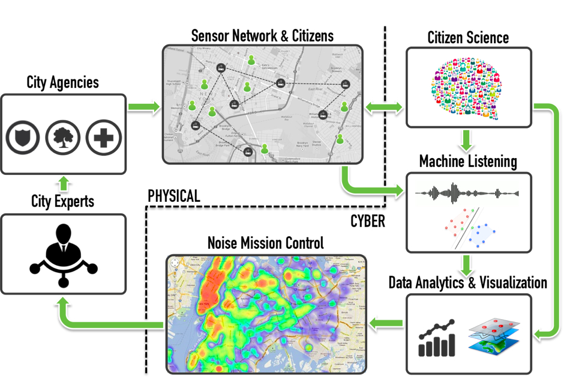
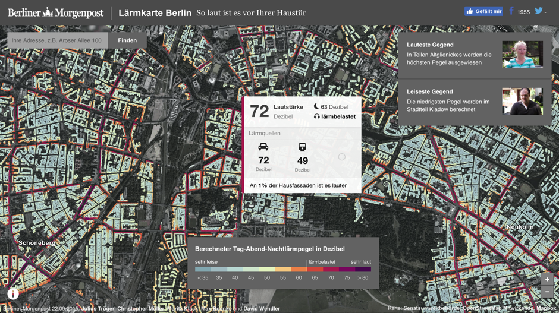
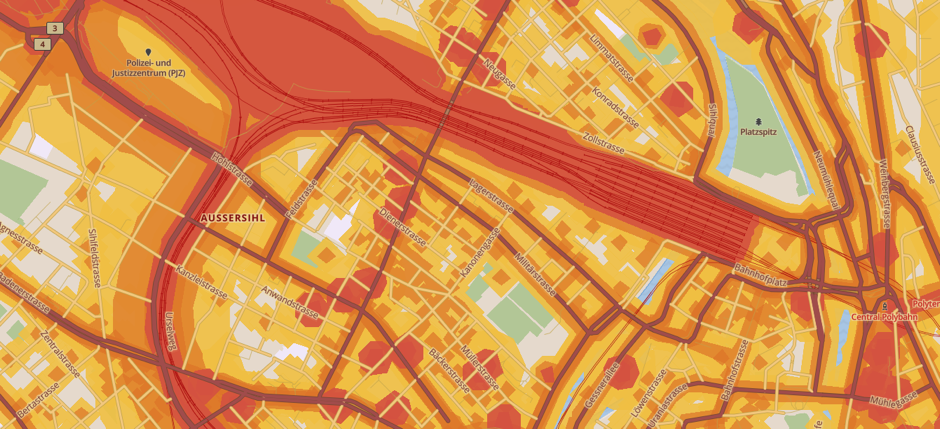
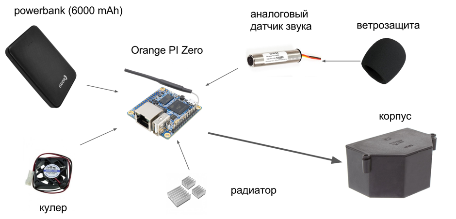
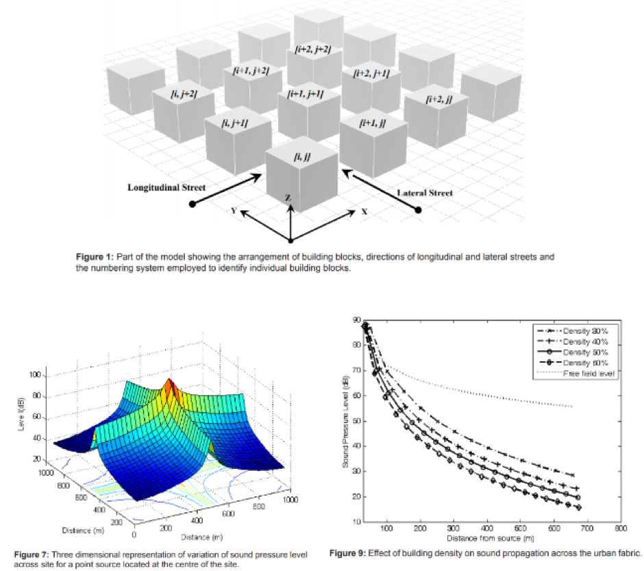

КАРТА ШУМА

Изучение шума — важная задача в условиях мегаполиса, так как именно этот фактор загрязнения часто не учитывается, несмотря на своё большое влияние на организм человека. Традиционно шум измеряется в полевых условиях с множеством датчиков за большой период времени, который должен перекрывать не только дневные, сезонные, но и годовые изменения различных факторов. Естественно, такой процесс требует больших ресурсов, как технических, так и человеческих.
Команда Urbica исследует проблему городского шума, используя новые методы и современные технологии. Мы подготовили карту шумового загрязнения города Москвы, основанную на модели анализа распространения шума от определенных типов объектов и уточненную данными, полученными полевыми измерениями при помощи датчиков, разработанных и собранных самостоятельно.
Проект релизуется в рамках летней стажировки
Кураторы проекта:
Анастасия Коновалова, Сергей Горбатюк
Участники проекта:
Григорий Беляев, эколог,
Артём Саакян, инженер,
Андрей Асланов, аналитик,
Татьяна Иванникова, картограф
Контакты:
Email: hello@urbica.co
Website: urbica.co
Население городов растет (уровень урбанизации составляет 54,5% на конец 2016 года, что в абсолютных показателях равняется 4 миллиардам человек), вместе с тем растут и запросы горожан на качество жизни в городе, качество городской среды.
Шумовое картографирование необходимо крупным городам, так как шумовое загрязнение - один из тех показателей качества среды, который влияет не только на комфорт жителей, но и на состояние их здоровья. Более 20 миллионов европейцев подвержены чрезмерному шумовому воздействию, из них около миллиона - имеют тяжелые заболевания органов слуха, связанные именно с этим фактором (RIVM, 2014).
Карта шума - эффективный инструмент анализа шумового загрязнения города, позволяющий быстро и точно определить места, наиболее подверженные воздействию шума и выявить источники шума.
Шумовое загрязнение неоднородно в пространстве и во времени, его распространение зависит от множества параметров городской среды. Именно поэтому необходимо создавать модели и изучать закономерности распространения шума для того чтобы упростить мониторинг городского шума.
Проект включал 5 этапов:
В рамках проекта были поставлены следующие задачи
Перед тем как перейти к изучению шумового загрязнения нужно определить, что считаем шумовым загрязнением.
Шумовое загрязнение - наличие на определенной территории повышенного уровня громкости окружающей среды, шум антропогенного происхождения, нарушающий жизнедеятельность живых организмов и человека.
Помимо изучения уровня шумового загрязнения, мы поставили задачу создать алгоритм определения источников шума, поэтому нам необходимо определиться с типологией источников шума.
Виды шума.
По источнику:
По уровню громкости:
По частоте:
По продолжительности воздействия:
Стоит отметить, что при создании статичной карты шума мы должны отсеивать те виды шума, которые сложно спрогнозировать в течение различных временных промежутков. Например, места, в которых будет проезжать, включая сирену, пожарная машина или пройдет уличное шествие. Поэтому, измерения уровня шума датчиками по полному дневному циклу были основаны на выборе точек с максимально репрезентативными значениями по прогнозируемым факторам влияния.
Кроме того необходимо определиться с тем, какое измерение шумового загрязнения стоит проводить. Шум имеет значительные флуктуации не только по дневному и недельному циклу, но и по сезону и по году. В рамках текущего исследования нет возможности учитывать сезонные и годовые изменения, потому что таких данных по региону проведения исследования (Москва) в открытом доступе нет. Поэтому, исследоваться будет флуктуация по дневному и недельному циклу и позиционироваться исследование будет как практика измерения и визуализации шума в летний период.
В условиях такой постановки задачи исследование должно проводиться в отношении наиболее “моделируемых” и предсказуемых источников звука, тех, чей характер мы можем описать и ставить гипотезы о его свойствах. Поэтому, внимание сосредоточено на четырех источниках:
При работе над проектом мы ориентировались на некоторые проекты схожей тематики, реализованные в различных мегаполисах
SONYC (Sound of New York City) — проект распознавания источников звука в Манхэттене, основанный на сети высокочувствительных микрофонов и нейросети, обрабатывающих получаемый сигнал  Рисунок 1 - Схема работы определения источника шума проекта SONYC
BerlinerMorgenpost noise map — карта шумового загрязнения Берлина (https://interaktiv.morgenpost.de/laermkarte-berlin/) — визуализация данных шумового загрязнения Берлина, созданная коллективом одноименной газеты. Является хорошим примером не по методологической составляющей (потому что используется другой подход), а по подходу к визуализации.  Рисунок 2 - Карта шума Берлина Berliner Morgenpost
Карта шума Лукаса Мартинелли — идея использовать данные OSM при создании карт шума. За основу принята гипотеза о наличии тройного буфера, по которому происходит снижение шумового загрязнения. И по каждому классу/типу дорог значение (ширина) буфера имеет различные значения. В результате карта шума может создаваться для абсолютно любого участка земной поверхности. Однако, недостаток состоит в том, что в данной модели не учитываются особенности застройки, плотности движения, количества зеленых насаждений, индивидуальные особенности рельефа, конкретные особенности организации движения и тд.  Рисунок 3 - Карта шума Цюриха Лукаса Мартинелли
В РФ, а конкретно, в Москве исследованием шумового загрязнения занимается ГПБУ “Мосэкомониторинг”.
Испытательная лаборатория контроля загрязнения атмосферного воздуха и уровней шума ГПБУ «Мосэкомониторинг», в рамках деятельности которой осуществляется, в том числе, контроль шума на жилых территориях при производстве строительных работ в ночное время, была создана в 2007 году. Изначально в составе ГПБУ «Мосэкомониторинг» действовала одна передвижная экологическая лаборатория, осуществляющая мониторинг уровней шума в дневное и ночное время суток по обращениям граждан и органов исполнительной власти.
В настоящее время на жилых территориях города Москвы, включая ТиНАО проводятся исследования акустической обстановки с использованием трех передвижных лабораторий, что позволяет расширить адресный перечень территорий, на которых проводятся измерения уровней шума.
Резюмируя вышесказанное, измерения шума в России, а конкретно, в Москве, проводятся прецедентно в случае выявления соответствия/несоответствия какого-либо объекта/процесса/зоны соответствующим санитарным нормам. И эти измерения, соответственно, не имеют систематизированный характер, на их основе нет возможности построить зависимости и закономерности для измерения городского шума. Поэтому, даже если бы к этим показаниям имелся бы доступ, применение они бы имели весьма ограниченное.
Гипотезы рабочие состоят в том, что
Так как исследование проводится в Москве на российском правовом и «научном» поле, то логично использовать в методике имеющиеся требования и указания, описанные в соответствующих ГОСТах, а именно ГОСТ Р 53187-2008 (Акустика. Шумовой мониторинг территорий). Этот нормативный документ описывает процедуру измерения шума и особенности шума как такового, оборудование, которым необходимо эти измерения проводить и то, какие параметры необходимо получить.
Однако, временные и прочие рамки не позволяют удовлетворять полностью требованиям ГОСТа, поэтому были приняты следующие допущения:
Поэтому исследования будут выполняться в следующем ключе. ГОСТ настоятельно рекомендует делать измерения так, чтобы средний уровень шума в ближайших точках замеров не различался более чем на 5 децибел. Учитывая то, что для объективной репрезентации информации необходимо достаточное количество градаций в слышимом спектре от нижнего порога до высшего порога, при котором начинаются необратимые повреждения слуха, необходима максимальная возможная точность, которую позволит измерительное оборудование. Точность измерений шумомера 2-го класса составляет +- 1 Дб, так что деление на 5 Дб градациям представляется оптимальным.
Экспериментальны датчик, созданный командой Urbica устанавливался на стационарном объекте (станция velobike) на время, покрывающее дневной цикл изменения шума в соответствии с требованиями ГОСТа (с 7-00 до 23-00) как по высоте над поверхностью земли, так и по отношению к внешним элементам конструкций (не считая элементы конструкции станции)
В процессе создания экспериментальных прототипов были опробованы несколько платформ (raspberry pi, orange pi, Arduino nano), по результатам тестирования которых оформились две принципиальные схемы датчиков. Первый — на базе Arduino, который используется только для измерения уровня шума и записи получившихся данных на sd-карту, второй — использует orange pi и обладает большим функционалом при меньшей автономности. Второй прототип использовался не только для полевых измерений уровня шума, но и для процесса определения источника шумового загрязнения, основанном на алгоритме машинного обучения.
Позже, во время процесса отладки прототипов, было принято решение отказаться от платформы arduino потому как её возможностей было недостаточно для выполнения поставленных задач. Недостаточная стабильность работы, постоянные сбои привели к тому, что данные, полученные с первых прототипов не являются репрезентативными, в то время как последующие датчики на orange pi работаю стабильнее и дольше, что является важным фактором успешности исследования.
Первая задача — создание датчика, который может измерять уровень шума. Самое важное при его создание — выбор правильных компонентов, которые позволят качественно записывать звук продолжительное время. Поэтому, самой важной в этом процессе видится задача выбора пары микроконтроллер - микрофон (после проверки различных конфигураций оптимальной видится пара контроллера OrangePI Zero и микрофона Шорох-11).
Все остальные элементы носят более вспомогательный характер, однако, есть ограничения, которые накладывает специфика измерения, необходимые к выполнению.Так, при выборе схожей конфигурации, необходимо питание с аккумулятора ёмкостью не менее 6000 mAh для достаточной продолжительности работы, необходимо ветрозащита для улучшения качество записи и процессору необходимо охлаждению, что требует установки радиатора и вентилятора охлаждения. Кроме того, если будет вестись запись с высокой дискретизацией, карта памяти должна соответствовать 10-му и выше классу для того, чтобы не возникало проблем с функционированием прибора.
Остальные компоненты установки не должны соответствовать каким-то специфическим требованиям, однако есть рекомендации по обеспечению хотя бы первичной влагозащиты.
В итоге, все описанные элементы вместе с корпусом и системными шлейфами при покупке в специализированных магазинах обойдутся примерно в 4000-4500 рублей.
 Рисунок 4 - Схема шумомера команды UrbicaДальше необходимо провести измерения в тех точках, в которых это будет наиболее репрезентативно и результаты можно будет экстраполировать на схожие территории. Для этого необходимо обратиться к идее Лукаса Мартинелли из ресурса Openstreetmaps.org выгрузить в удобную для пользователя геоинформационную среду имеющиеся сведения о категориях объектах и их расположения.
После чего следует определить, какие объекты могут быть важными источниками шума и замерить уровень шума вблизи них при условии, что они являются «шумовыми доминантами». На основе получившихся измерений можно делать предположения о шумовом фоне вблизи объекта и изменении его в течение времени. После получения достаточного количества данных о распределении шума вблизи различных объектах, стоит применить модель распространения шума в городской среде в зависимости от застройки, описанную Мустафой Рефатом А. Исмаилом в его работе “A Parametric Study of the Effect of Building Distributions and Size on the Propagation of Sound in the Urban Environment”
 Рисунок 5 - Модель распространение звука проф. ИсмаилаПосле чего необходимо подробно изучить получившуюся модель на предмет несостыковок и устранить их путем проведения измерений в данных точках. На этом непосредственно процесс картографирования уровня шума заканчивается.
Для определения источника звука (шума) необходимо использовать другие механизмы. После сбора достаточного количества образцов обучающей выборки по необходимым категориям механизм машинного обучение позволит создать программу, которая сможет определять источник шума
Собранные при помощи датчиков данные, обогащенные координатами места установок датчика, обрабатываются для уточнения модели. Для этого мы используем язык программирования Python и его библиотеки: numpy, scipy, librosa, sounddevice, pandas, geopandas и shapely.
На первом этапе проводится переформатирование записи в 5-секундные отрывки. Затем необходимо извлечь признаки из получившихся записей, для этого мы при помощи скрипта распознаем источник звука на каждой из 5-секундных записей из группы следующих классов:
Затем, исходя из координат установки датчика, времени записи и источника шума, ближайшим соответствующим источникам шума объектам OSM присваивается вычисленный из записи уровень шума, который, предположительно, создает этот объект.
После того, как пользователь сочтет, что собрал достаточно данных, он запускает скрипт, который изменяет заданные размеры буферов, и карта шума перестраивается с измененными параметрами